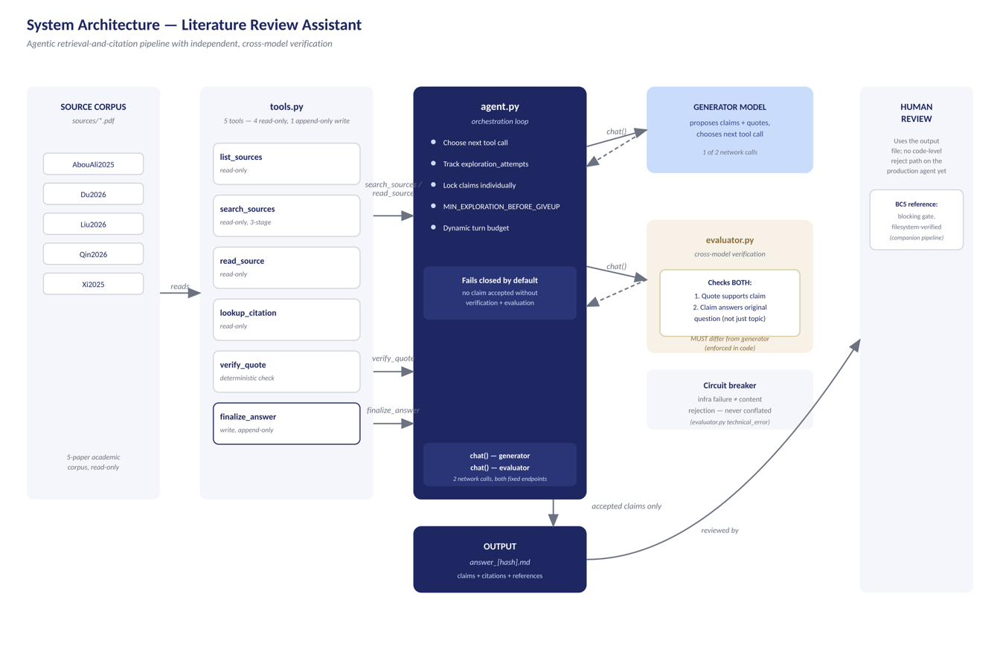
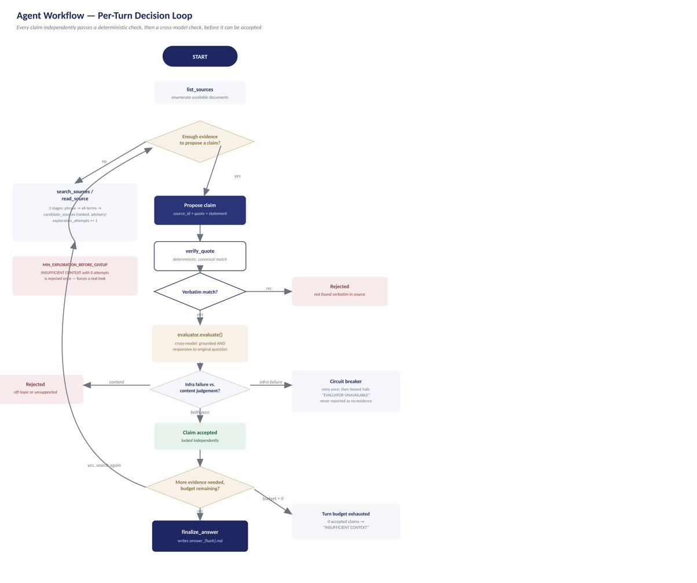

An agentic AI system that retrieves, verifies, and cites claims from academic sources. Built and governed as a capstone project.
Literature review work means finding a claim, tracing it to a real source, and checking that the source actually says what you think it says. Agentic AI systems can automate the finding part quickly. The risk is the checking part. A fluent, confident-sounding agent can produce a citation that looks right but is not. It might paraphrase a source and present the result as a quote. Or it might attach a real quote to the wrong idea. This project treats that risk as the central design problem, not an afterthought.
The agent answers a question by searching a fixed corpus of academic papers. It proposes a claim with a supporting quote. That claim must then pass two independent checks before it can appear in the final answer. The first check verifies the quote word for word against the source text. The second check uses a separate model to judge whether the claim actually answers the question asked. No claim is accepted on the strength of either check alone.
Three components, each with a narrow job. agent.py runs the orchestration loop and decides what to do next. tools.py exposes five tools. Four are read-only: list, search, read, and look up a citation. The fifth writes the final answer file, and only after every claim in it has already been checked. evaluator.py runs the second, independent check. It always uses a different model than the one that wrote the claim, a rule enforced in code rather than left for someone to remember.

Every turn follows the same loop. The agent searches or reads a source, proposes a claim, checks that the quote is real, and checks that the claim is relevant. It then locks the claim in, or rejects it and tries again. A claim is only accepted once both checks pass independently. If the system cannot find support for a question, it says so directly instead of guessing. A separate guard makes sure it has actually looked before it is allowed to give up.

Verification integrity was tested against twelve adversarial cases: paraphrase, fabrication, wrong-source attribution, altered numbers, and similar attacks on the citation itself. All twelve were correctly rejected. Of thirteen documented evaluation cases run live against the current system, twelve passed, covering single-source and multi-source questions. The remaining case asks how two independently sourced facts relate to each other. It failed reproducibly, confirmed independent of which evaluator model was used, and is reported as a known limitation rather than a resolved defect (see the Final Report, Section 5.2). Retrieval was also checked against a structurally different, previously unseen set of documents, confirming the verification approach was not just tuned to the project's own five source papers.
Numbers reflect the project's live-confirmed evaluation record as of the most recent full re-validation run. See the Final Report for full methodology and the one documented known limitation, a composite-question case.
A companion assignment analyzed this system using NIST's AI Risk Management Framework as an organizing lens. This was not a formal compliance audit. It was a structured look at what the architecture actually controls, what evidence backs that up, and what is still open. The honest finding: governance maturity is not a single safe-or-unsafe label. Content verification is strongly evidenced. Prompt-injection resistance is real for some attack paths and essentially untested for others. The system's overall deployment readiness is described as conditional, with a specific, named list of what would need to happen first, not a vague disclaimer.